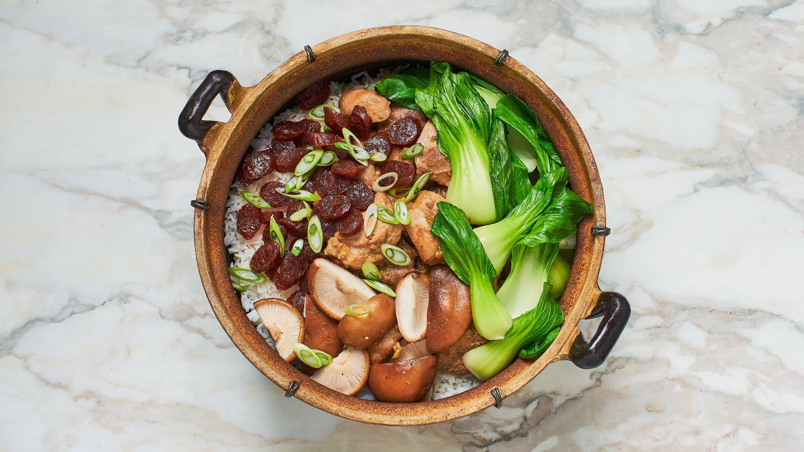

Bo Zai Fan (Chinese Chicken and Mushroom Clay Pot Rice)
BY DIANA YEN
March 1,2022
Photo By Heami Lee, Food Styling By Judy Haubert, Prop Styling By Rebecca Bartoshesky
This version of Bo zai fan, or Chinese clay pot rice, combines sweet-savory Chinese sausage with steamed chicken, earthy shiitake mushrooms, and tender bok choy. It's the ultimate one-pot comfort food and a staple in Hong Kong cuisine. Once you have the technique down, this recipe is endlessly riffable, using other combinations of meats, seafood, and vegetables. Cooking in a clay pot helps the rice develop a crunchy bottom layer. Try to resist opening the lid while cooking—you will know the rice is done when you smell the distinct nutty aroma of well-toasted rice.
Cook's Notes: If using a Dutch oven to make this dish, there may be too much liquid at the end as it's not as porous as a clay pot. Uncover and let simmer until excess liquid evaporates, about 1 minute. Then cover and let sit as directed.
To substitute dark soy sauce: Mix 1 tsp. regular soy sauce with ¼ tsp. molasses and a pinch of sugar in a small bowl.